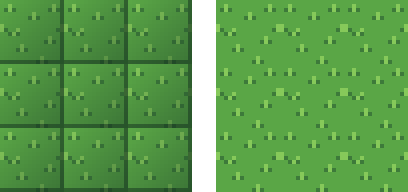
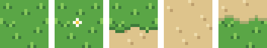
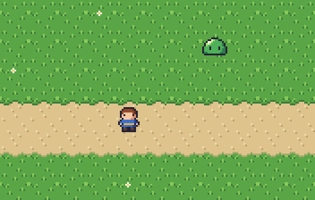
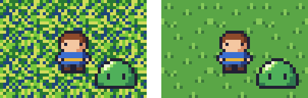

8. タイルと背景
ゲームの背景の多くは、同じ大きさの正方形の画像を格子状に並べて作る。この章では、並べても継ぎ目の目立たないタイルの描き方と、タイルを組み合わせたマップの作り方、背景とキャラクターの関係について説明する。
8.1. タイルとは
背景を組み立てるための、同じ大きさの小さな画像をタイルと呼ぶ。マップチップとも呼ばれる。16×16 ピクセルのタイルを横に 20 枚、縦に 15 枚並べれば、320×240 ピクセルの画面を埋められる。
タイルで背景を作ると、次の利点がある。
少ない枚数の絵で広い背景を作れる。
地形の配置を変えるだけで、別のマップを作れる。
プログラムからは、マップを「どの位置にどのタイルを置くか」という 2 次元配列として扱える。
Pyxel エディタや Tiled などのタイルマップエディタを使うと、描いたタイルを並べてマップを作れる。
8.2. 継ぎ目の無いタイル
草地や地面のように同じタイルを敷き詰めて使うタイルは、並べたときに継ぎ目が目立たないように描く必要がある。

図 8.1 タイルを 3×3 枚並べたもの（4 倍）。左は継ぎ目が目立つタイル、右は継ぎ目が目立たないタイル。
図 8.1 の左のタイルには、右端と下端に濃い線があり、さらに左上から右下に向かって暗くなっている。1 枚だけ見るとまとまって見えるが、並べると格子模様が浮かび上がる。継ぎ目を目立たなくするには、次の規則を守る。
タイルの縁を囲む線を描かない。
タイルの中で明るさを大きく変えない（グラデーションを付けない）。
縁をまたぐ模様は、反対側の縁に続きを描く。
最後の規則は、整数の剰余で考えると分かりやすい。幅 16 ピクセルのタイルでは、x 座標が 16 のピクセルは、隣のタイルの x 座標が 0 のピクセルである。つまり、模様を描くときに座標を 16 で割った余りを使えば、縁をまたいでも模様がつながる。右のタイルでは、左右の縁をまたぐ位置に草を 1 つ描いている。
描いたタイルは、実際に並べて確認する。多くのエディタには、画像を縦横に半分ずつずらす機能や、画像を敷き詰めて表示する機能（Aseprite のタイルモードなど）がある。tile_preview.py を使うと、タイルを並べた画像を作れる。
18def tile_image(tile: Image.Image, columns: int, rows: int) -> Image.Image:
19 """タイルを columns×rows 枚並べた画像を返す。"""
20 result = Image.new(tile.mode, (tile.width * columns, tile.height * rows))
21 for row in range(rows):
22 for column in range(columns):
23 result.paste(tile, (column * tile.width, row * tile.height))
24 return result
1python tile_preview.py my_tile.png -n 4
8.3. 繰り返しを目立たなくする
継ぎ目が目立たなくても、同じタイルを広く敷き詰めると、模様の繰り返しが見えてしまう。図 8.3 の草地でも、同じ位置に同じ草が並んでいるのが分かる。繰り返しを目立たなくするには、次の方法がある。
基本のタイルには、目を引く特徴的な模様を描かない。
模様を少し変えたタイルを数種類用意し、混ぜて並べる。
花や石などの飾りを描いたタイルを、ところどころに置く。
8.4. マップを組み立てる
地面の種類が変わる場所には、2 つの地面の境界を描いたタイルを使う。図 8.2 は、本書のマップで使ったタイルである。

図 8.2 マップに使ったタイル（6 倍）。左から、草地、花、道の上側の境界、道、道の下側の境界。
境界のタイルでは、境界線の高さを左右の縁でそろえておく。そうすれば、同じタイルを横に並べても境界線がつながる。ここでは横に延びる道だけを扱ったが、道の曲がり角や行き止まりを表すには、角や端の形をした境界のタイルがさらに必要になる。
これらのタイルを並べ、キャラクターを置いたものが 図 8.3 である。

図 8.3 タイルを並べたマップ（3 倍）
8.5. 背景とキャラクターのコントラスト
ゲームの画面では、プレイヤーが操作するキャラクターや敵が、背景よりも目立たなければならない。そのため、背景はキャラクターより控えめに描くのが基本である。

図 8.4 同じキャラクターを、模様の強い背景（左）と落ち着いた背景（右）に置いたもの（5 倍）
図 8.4 の左の背景は、明るさの差が大きい色を細かく混ぜているため、キャラクターの輪郭が背景の模様に埋もれている。背景とキャラクターを区別しやすくするには、次の点に気を付ける。
背景は、キャラクターより明るさの差（コントラスト）と彩度を抑える。
背景の模様は、キャラクターより大きく、まばらにする。
キャラクターと背景で、同じ系統の色を使いすぎない。
最後の点については、図 8.3 のスライムが良い例である。緑のスライムは緑の草地の上で目立ちにくい。アウトラインがあるので見分けられるが、色を変えるか、背景の緑を暗くするほうが見やすくなる。